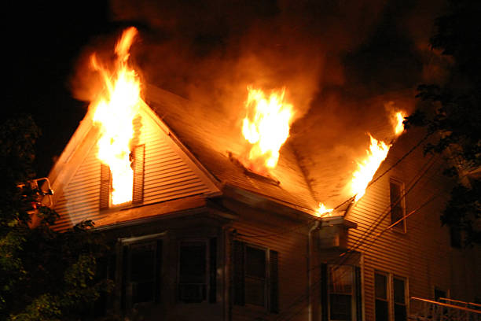
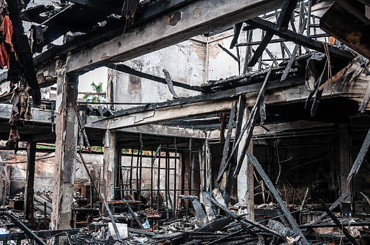

Facts about fires
There are several important characteristics regarding fires. Some are:
- Spread Quickly: A fire can double its size every 30 seconds. Within minutes, a small flame can turn into a major fire that engulfs an entire room or building.
- Cause Toxic Smoke: Most fire-related deaths are caused by toxic smoke, not burns.
- Can heat the air: Fires use oxygen to improve themselves and can heat up the air we breathe to dangerous levels. This air can burn our lungs, and melt clothes in our bodies.
- They can happen anywhere. Fires can destroy buildings, homes, and personal belongings in a short amount of time. Recovering from the physical damage caused by fires can be costly and emotionally draining.
- Make a plan on what to do in the event of a fire; extinguisher, escape from the area, etc
- Small Fires: Can be tamed or controlled early with fire extinguishers or sprinklers.
Preparing for a fire
Several steps can be taken to reduce fires. People can prepare by:
- Turn off heaters when not in use
- Never leave a cooking stove unattended when cooking
- Smoke in safe areas, away from inflammable items
- Install smoke detectors and routinely service them
- Make a plan on what to do in the event of a fire; extinguisher, escape from the area, etc
- Service home heating devices to reduce the risk of breakdowns
- Ensure that electrical cords are in good condition, not frayed or exposed wires

Procedures to follow during a fire
There are several steps to follow in the event of a fire. These may include:
- Avoid toxic gas and smoke by crawling near the floor
- Identify your options for getting out of the building
- Feel the doorknob to see if it's hot, or if there’s smoke coming through the door. If there is, abandon the door and go with a different route
- Open doors slowly, mindful of what's on the other side. Close the door if lots of smoke or fires are present.
- If you cannot escape from the building, hunker down in a room, barricading any place Smoke might come through.(Cracks through the door, vents, etc)
- If you catch fire, do the tried and tested method of stopping, dropping, and rolling. When assisting someone on fire, using a fire extinguisher, or smothering the flames with a non-flammable or flame retardant item like a heavy jacket or blanket. Provide first aid to any burns and direct them to emergency services.

After a Fire: What Happens Next
Surviving a fire doesn’t end when the flames are out. Knowing what to do afterward is essential to ensuring long-term safety and recovery.
- Medical Attention: If you or someone else has been exposed to smoke or suffered injuries, seek immediate medical attention. Even minor smoke inhalation can have serious health effects.
- Contact Authorities: Once it’s safe to return, contact the fire department to assess the damage and ensure that the building is structurally safe.
- Insurance Claims: Begin the process of documenting the damage for your insurance company. Take photos and keep detailed records of any items lost or damaged.
- Emotional Support: Experiencing a fire can be traumatic. Don’t hesitate to seek counseling or join a support group to cope with the emotional aftermath.